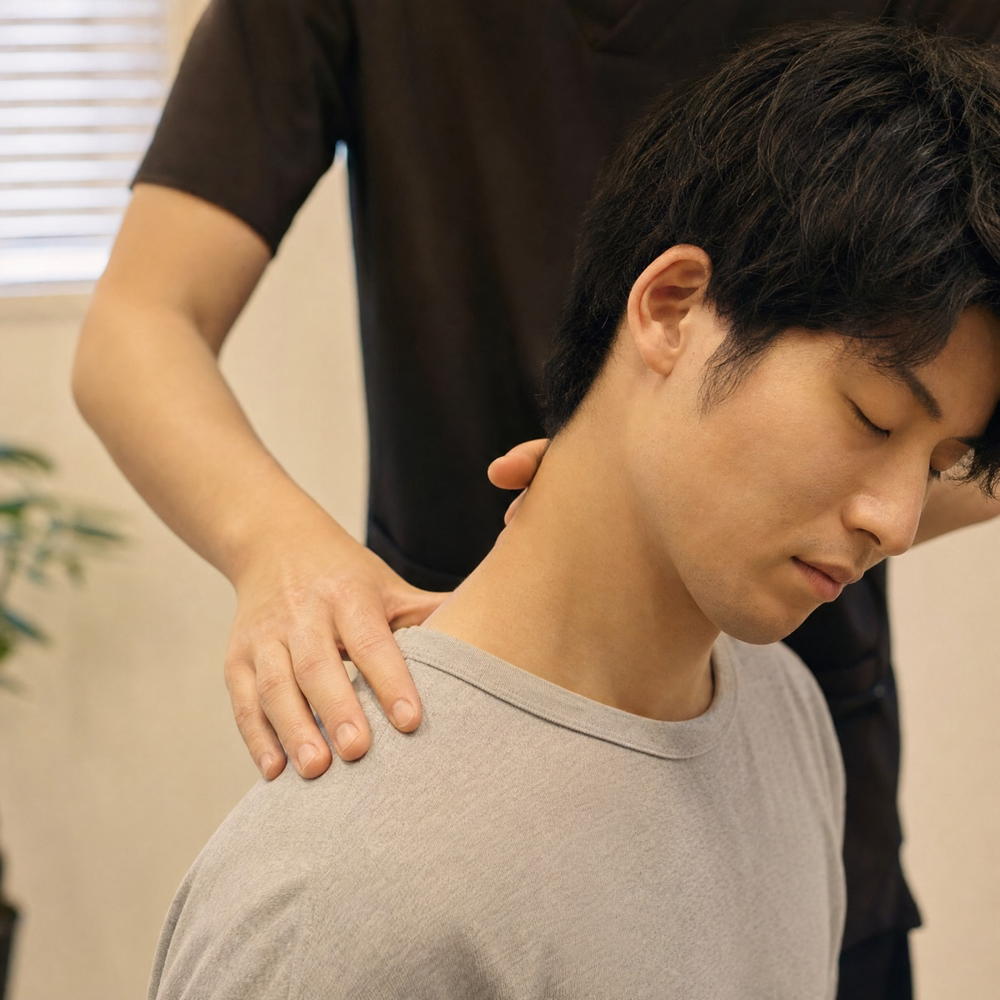
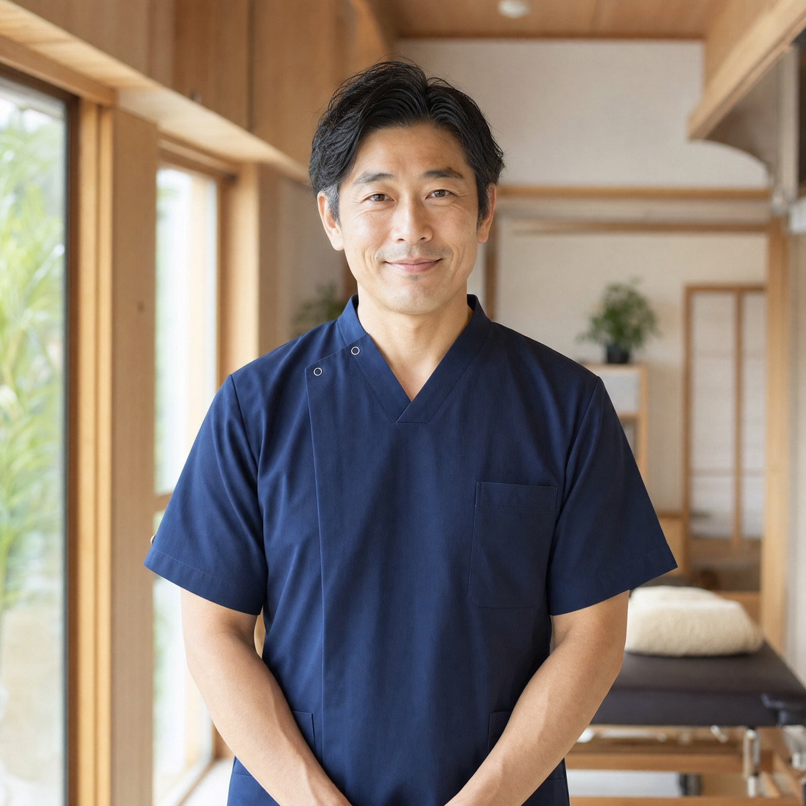

パソコン仕事で固まった首・肩・背中を、
姿勢のクセから整える肩こり専門の整体院です。
その肩こり、もむだけでは戻ってしまう理由があります。
座り方・画面の高さ・腕の置き方まで聞き取り、肩に負担がかかる原因を最初に特定します。
強く押さずに、首・肩甲骨・背骨まわりを順番にゆるめます。ボキボキ鳴らす施術はしません。
デスクで1分でできるストレッチを、あなたの体に合わせて1つだけお伝えします。

肩こりの多くは、肩そのものではなく、長時間同じ姿勢を続けることで起きています。ほぐし間では、こった場所だけでなく、その原因になっている姿勢から整えるので、施術の効果が長く続きます。

柔道整復師（国家資格）
整形外科の勤務を経て、デスクワークの方の肩こりを専門にする「ほぐし間」を開院しました。自分自身も会社員時代に肩こりで悩んでいたので、「明日の仕事が楽になる」施術を大切にしています。
月末の締め作業の時期は、毎日頭痛薬を飲んでいました。3回目くらいから夕方の重さが軽くなり、今は薬を持ち歩かなくなりました。
強くもまれるのが苦手でしたが、ここは痛くありません。会議の合間にできるストレッチを教えてもらい、毎日続けています。
夜21時まで空いているので、残業のあとでも通えます。予約もスマホで1分なので、忙しい時期でも続けられています。
カウンセリング・姿勢チェック・施術・セルフケア指導つき
2回目以降の方。体の状態に合わせて施術します。
1回あたり5,940円。有効期限は3か月です。
空いている時間を選ぶだけ。24時間受け付けています。
お仕事の内容やつらい時間帯をお聞きします。
原因を説明してから、痛くない施術でゆるめます。
デスクでできるストレッチを1つお伝えします。
強く押したり、骨を鳴らしたりする施術はしません。力加減はその場でいつでも調整できます。
体の状態によりますが、最初の1か月は週1回、楽になってきたら月1〜2回のメンテナンスをおすすめしています。初回に目安をお伝えします。
大丈夫です。着替えを無料でお貸ししています。
こちらから回数券をすすめることはありません。1回ずつのご予約で問題ありません。
初回体験は1日3名様まで。空いている時間をご確認ください。
初回の空き枠を見る →平日 10:00〜21:00 ／ 土日祝 9:00〜18:00 ／ 水曜定休 駅から徒歩3分